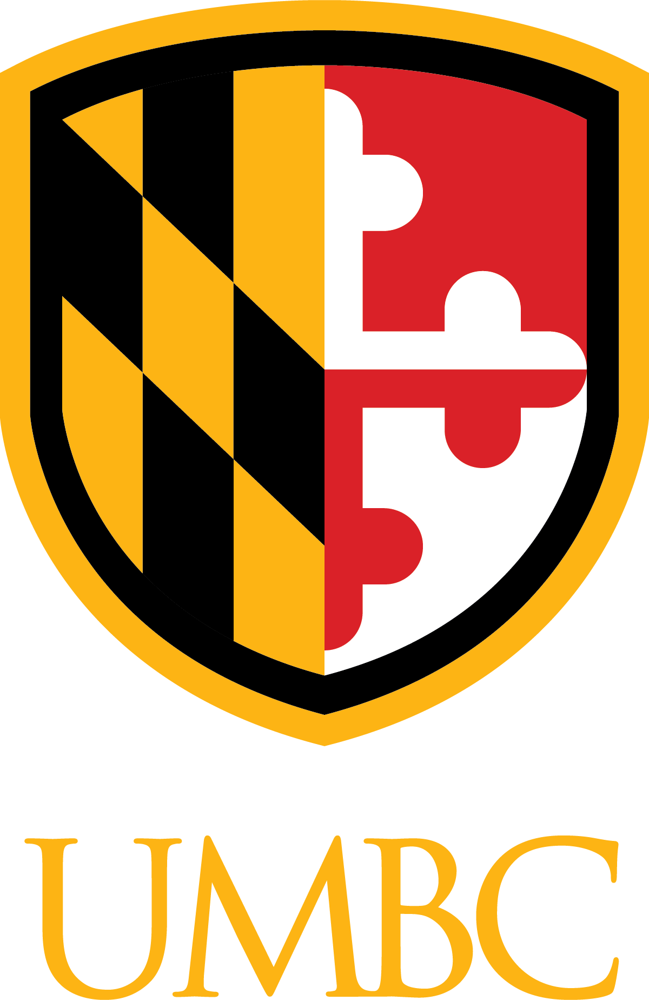

Research Scientist @ Amazon & PhD @ University Of Maryland, Baltimore County (UMBC)
I am a Research Scientist @ Amazon working with Alexa AI working on Natural Language Processing and Machine Translation challenges (fancy name for translating one language to another!) . I completed my PhD @
University Of
Maryland, Baltimore County (UMBC) in the Dept. Computer Science and Electrical Engineering (CSEE). I was advised by
Prof.
Tim Oates in the CORAL lab and co-advised by Prof. Frank Ferraro. Previously my research was broadly focused on applications of deep
learning
techniques
(and machine learning) for various domains such as security and natural language processing (conversational AI) with an emphasis on modeling with limited data (low resource modeling). My research includes problems combining
vision and language where training datasets are small.
I received my Bachelors from Maharashtra
Institute Of Technology (University of Pune) in Computer Engineering in 2007 and completed my Masters in Science (M.S.) from UMBC
in 2012. My Masters thesis is on project GLOBE.
Before pursuing a PhD, I worked with a number of companies working on various platforms ranging from Android (my latest) to security, databases & servers in my first job. Its been a huge learning experience seeing how
companies work and different products they make.
I like to be a Jack of all trades, trying new things. These days I am learning to paint and play some music. I am a novice Saxophone player. I always love meeting new
people, discussing ideas and up for anything new to learn.
Work Experience
Amazon Alexa AI
Research Scientist
March 2021 - Present
Natural language processing and machine translation research at Alexa.
Coral Lab @ UMBC
Research Assistant
Fall 2014 - Fall 2020
Research in low resource deep learning, time series modeling and security.
GE Global Research
Research & Development Intern (Machine learning Lab)
May 2016 – August 2016
Research in deep learning for time series feature extraction and classification.
Education

Ph.D. Computer Science
University Of Maryland, Baltimore County (UMBC)
Fall 2014 - Spring 2021
Dissertation: Supervised Training Strategies for Low Resource Language
Processing
M.S. Computer Science
University Of Maryland, Baltimore County (UMBC)
Fall 2010 - Spring 2012
Thesis: Calculating Representativeness of Geographic Sites Across the World
B.E. Computer Engineering
Maharashtra Institute Of Technology, University Of Pune
Fall 2003 - Spring 2007
Comprehensive list of my work experience can be found in my full CV.